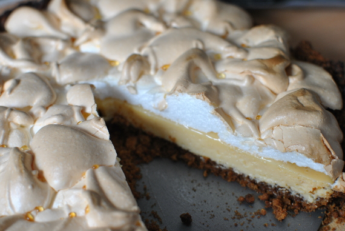

Key Lime Pie

- Zubereitung: ca. 45 Minuten
- Backzeit: 45 Minuten
- Durchmesser ca. 28 cm
Zutaten
- 200 g Vollkornkekse
- 100 g Butter
- 5 Eier (Größe M)
- 600 g gezuckerte Kondensmilch
- abgeriebene Schale einer Zitrone
- 175 ml Limettensaft
- 250 g Zucker
- Fett für die Form
Zubereitung
- Den Backofen auf 200° Celsius (Umluft: 180° Celsius) vorheizen. Die Form fetten. Die Kekse in einen großen Gefrierbeutel geben und mit einem Nudelholz zerbröseln. Die Butter schmelzen und mit den Bröseln verkneten. Die Masse in die Backform geben,
flach drücken, dabei einen 3cm hohen Rand formen. Im Ofen 8 Minuten backen.
- Die Eier trennen. Die Eigelbe, Kondensmilch, Zitronenschale und Limettensaft verquirlen. Die Masse auf den vorgebackenen Boden geben. Im Backofen 15 Minuten backen.
- Die Eiweiße und 1/2 TL Salz steif schlagen. Den Zucker unter Rühren langsam einrieseln lassen und weiterrühren, bis der Eischnee glänzt und sich der Zucker gelöst hat. Den Eischnee locker auf der vorgebackenen Creme verteilen, dabei einem 2 cm breiten
Rand frei lassen. Bei gleicher Temperatur 20 Minuten weiterbacken. Aus dem Ofen nehmen und auskühlen lassen.